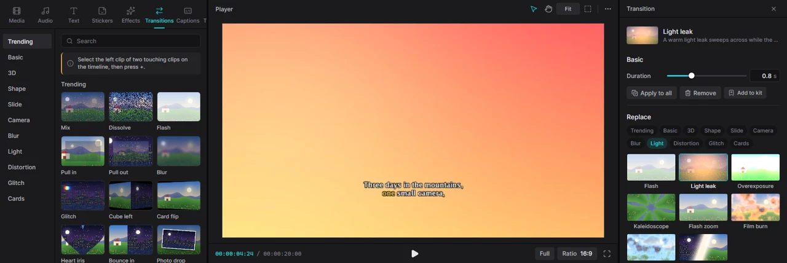
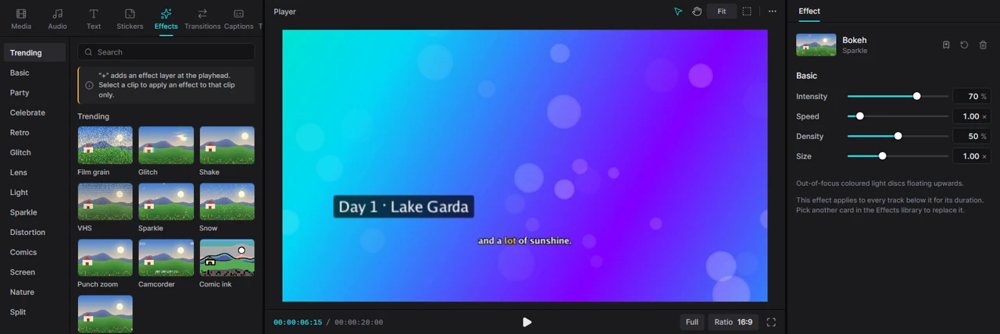
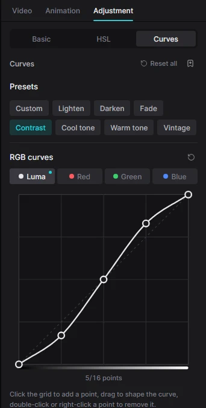
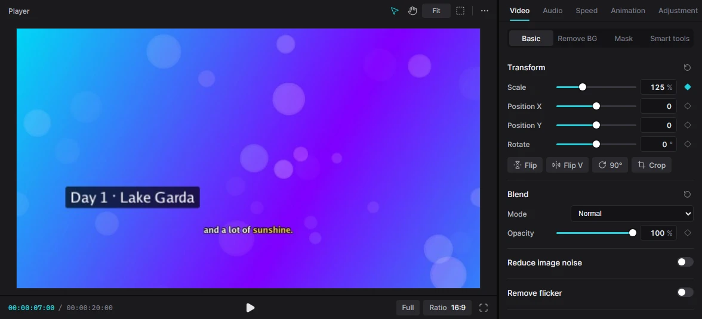

For humansCreating7 min read
Effects, transitions & colour
Transitions smooth out cuts, effects add movement and atmosphere, filters and colour tools set the mood. Everything in this page is original to Kadr and rendered on your computer.
See it move before you add it
Hover over a card for a moment and its picture starts to play: a transition goes from a sunny landscape to a night city, an effect runs on a sample picture, a filter sweeps from before to after, and a clip animation moves a small clip on a dark stage (the dashed outline marks where the clip ends up). Move the mouse away and the still picture comes back.
Previews work everywhere you choose a look: the Transitions, Effects, Filters, Text and Stickers tabs (including generated backgrounds), the Animation tab, Text → Effects and Text → Animate, the replacement grids in the Transition, Effect and Filter panels, caption styles and My kit. Items that don't move — still stickers, fonts, voice effects — simply show their picture.
Kadr draws the previews itself the first time you hover a card and keeps them, so the first hover can take a moment and later ones are instant. If Windows animations are switched off (Settings → Accessibility → Visual effects → Animation effects), previews stay still too.
Transitions

A transition plays between two clips that touch each other on the same track (usually the main track). There are 221 of them in 19 category tabs — from simple fades and slides to 3D cubes, iris shapes, light leaks and glitches, plus wipes (torn paper, paint strokes, zigzags), zooms, spins and vortexes, liquid and ink, particles and glass shatter, film and retro looks and split screens. Whip pans, wipes, slides, pushes and many others have a Direction; transitions with a mask edge also have a Softness.
Add a transition
- On the timeline, click the left clip of the two clips you want to join.
- Open the Transitions tab. The hint at the top confirms “Applies to the cut after the selected clip”.
- Click + on a transition (or double-click it). You can also simply drag a transition onto the cut on the timeline.
The transition appears as a small badge on the cut. Apply to all (next to the hint) puts the highlighted transition on every cut of the main track at once.
Adjust or remove it
Click the badge on the timeline to open the Transition panel in the inspector (or select the left clip and click the transition's name under Video → Transition to next clip). There you can set the Duration, the Direction and Softness where a transition supports them, swap it for another under Replace, Apply to all, or Remove it. With the badge selected, Delete removes it too. A transition can be at most half as long as the shorter of the two clips.
Video effects

The Effects tab has 195 effects in 20 categories: Party, Retro, Glitch, Lens, Light, Sparkle, Comics, Nature, Split and more, plus Motion (shutter, dolly zoom, jelly wobble), Frame (instant photo, viewfinder, rounded card), Stylize (pixel sort, jigsaw, 8-bit), Weather (raindrops on glass, blizzard, thunderstorm), Dreamy (fireflies, falling petals, aurora) and Color (colour pop, channel swap, solarize). Use them in two ways:
- As a layer: click + (or drag the card to the timeline). The effect goes on its own effect track at the playhead and affects everything below it for as long as the effect clip lasts. Drag its edges to change when it starts and ends.
- On one clip: select a clip, click an effect card to highlight it, then click Apply to clip in the hint bar. Only that clip gets the effect; you'll find it under Effects in the clip's Video tab.
Select the effect (the layer, or the clip's effect list) to tune it: every effect has its own sliders — Intensity, Speed and up to four of its own, such as density, size, fog or wind. The circular-arrow button resets them, the bin removes the effect.
Filters
Filters change the colours of the picture in one click — 227 of them in 25 categories: warm, cool, film, black-and-white and night looks, plus Cinematic grades, Vintage film stocks, soft Aesthetic pastels, Mood, Seasons, two-colour Duotone, Special looks such as night vision, and Portrait filters that keep skin tones natural.
- On one clip: select the clip, click a filter card, then Apply “…” to clip.
- On a stretch of the video: click + on a card. A filter layer is added at the playhead and colours everything below it.
With a filtered clip or a filter layer selected, the panel at the top of the Filters tab shows its Intensity (lower it for a subtler look), a Replace with … button for the highlighted card, and a bin to remove it.

Colour adjustment
Select a video or photo clip and open the Adjustment tab of the inspector. It has three pages:

Basic
- Color: Temperature (warmer/cooler), Tint, Saturation, Hue.
- Lightness: Exposure, Brightness, Contrast, Shine, Highlights, Shadows.
- Effects: Sharpen, Vignette (dark corners), Fade, Grain.
- LUT: type the path of a
.cubecolour-grading file and set its intensity.
Auto adjust analyses the frame and fixes exposure, contrast, white balance and saturation in one click. Reset clears all colour settings, including HSL and curves.
HSL
Change one colour without touching the others. Click one of the eight colour dots (red, orange, yellow, green, cyan, blue, purple, magenta) and move Hue, Saturation and Lightness — for example make the sky deeper blue or the grass less yellow. A small dot marks the bands you have changed.


Curves
For precise control of brightness and colour. Start from a preset — Lighten, Darken, Fade, Contrast, Cool tone, Warm tone, Vintage — or shape the curve yourself:
- choose Luma (overall brightness), Red, Green or Blue;
- click the grid to add a point (up to 16), drag points to bend the curve;
- double-click or right-click a point to remove it.
Pulling the middle up brightens; an S-shape adds contrast.
Grade several clips at once with an adjustment layer: open the library's Adjustment tab and add Custom adjustment. It appears on its own track and every colour setting you give it affects all tracks below it for its duration.
Clip animations
The Animation tab of the inspector makes a clip move as it appears or disappears. There are 310 animations, and all of them work for videos, photos, stickers and text:
- In (105) and Out (105) — fades, slides, zooms, spins, blinds and slats, doors that swing open on a hinge, shine sweeps, RGB splits, motion blur and more at the start or end of the clip;
- Combo (53) — an in-and-out pair in one, such as a coin spin, a slot-machine roll or a float away (it replaces separate In/Out animations);
- Loop (47) — a movement that repeats for the whole clip, such as floating, swinging, pulsing, a gentle wave or a buzzing RGB shift.
Click a card to apply it and set the Duration slider above the grid.
Keyframes: animate any value
Keyframes make a setting change over time — a slow zoom, a title that slides in, music that gets quieter, a colour that warms up. Any slider with a small diamond next to it can be animated: position, scale, rotation, opacity, volume, every colour slider and filter intensity.

Set the starting point
Move the playhead to where the change should begin (it must be over the selected clip). Set the value, then click the diamond — it fills in.
Set the end point
Move the playhead later and change the value. Because the setting is now animated, Kadr adds a second keyframe automatically.
Play it back
Kadr smoothly blends the values between keyframes. Add as many as you like.
The diamond tells you the state: outlined — no animation; coloured outline — the setting is animated, but not at this moment; filled — a keyframe at the playhead (click it to remove that keyframe). If you move the playhead outside the clip, the diamond is disabled.
Keyframes added with the mouse change at an even pace. Ease-in and ease-out movement is available to AI assistants and scripts via keyframe.add — see the AI documentation.
My kit: save your favourite looks
Found a text style, colour grade, filter, effect, transition or animation you love? Select the clip and click the bookmark button in its panel (for example next to the Text sub-tabs, in the Adjustment header, or Add to kit in the Transition panel). It is saved under a name in My kit, the last library tab, and works in every project.
In My kit, pick a kind on the left, search by name, and click Apply to put a saved look on the selected clip. The pencil renames a preset; the bin deletes it (click twice to confirm).